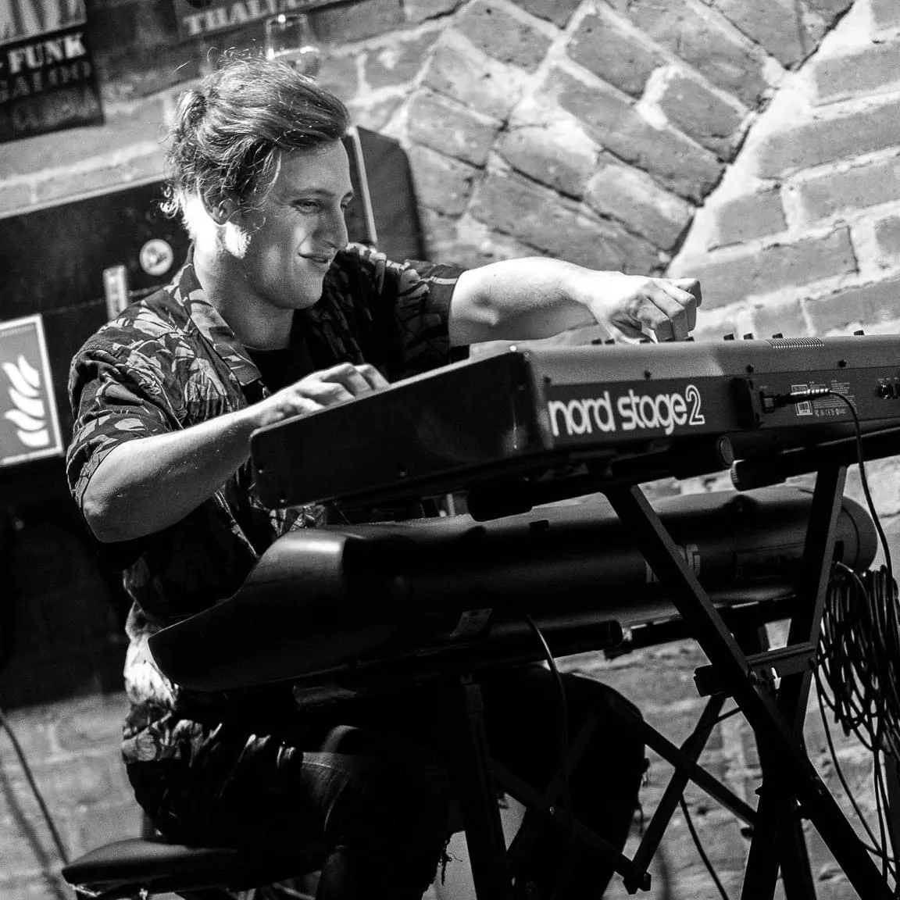
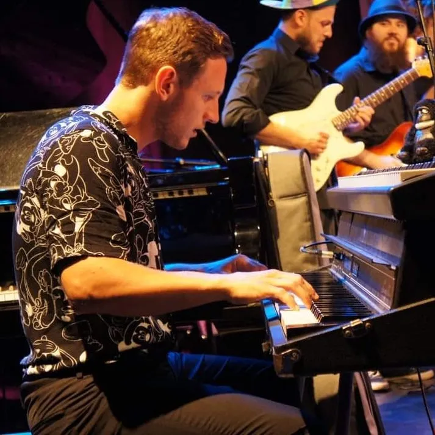

Si te gustan mis videos, te invito a mirar mi
JAZZ PIANO & CLASES DE PIANO – ACERCA DE MÍ
Muchos músicos comienzan a aprender a tocar su instrumento desde
niños. En lo que respecta a eso, probablemente debo contarme entre
los "reclutas tardíos". La música me ha acompañado desde que era
pequeño. En Buenos Aires, mi ciudad natal, la música es
omnipresente. No hay vida sin música en Argentina. Pero no aprendí a
tocar un instrumento hasta que fui adulto, cuando tenía 23 años para
ser precisos, hace diez años. En ese momento me acababa de mudar a
Viena, todavía no podía hablar el idioma, pero me sentaba al piano
todos los días durante 8, 10, 12 horas. Tuve muchos maestros y
modelos a seguir, concretamente en YouTube. Cuanto más tocaba y
mejoraba, más me daba cuenta de que tocar el piano no es solo un
pasatiempo para mí, es una vocación.
En el Instituto de Música de VienaPude desarrollar enormemente mis habilidades como pianista de jazz. En febrero de 2022 aprobé con éxito mi examen de diploma en pedagogía instrumental y vocal (IGP) y desde entonces he trabajado como músico, dando clases de piano a personas amantes de la música de todas las edades.
Lo que ya te puedo decir: ¡ NUNCA es tarde para aprender a tocar el piano! Esa es la buena noticia 😉. Lo único que necesitas es alegría haciendo música y practicando, paciencia (disfruta el camino) y por supuesto: un teclado o piano. Si estás interesado en mis lecciones, encontrarás toda la información sobre mis lecciones de piano en Lecciones .
En el Instituto de Música de VienaPude desarrollar enormemente mis habilidades como pianista de jazz. En febrero de 2022 aprobé con éxito mi examen de diploma en pedagogía instrumental y vocal (IGP) y desde entonces he trabajado como músico, dando clases de piano a personas amantes de la música de todas las edades.
Lo que ya te puedo decir: ¡ NUNCA es tarde para aprender a tocar el piano! Esa es la buena noticia 😉. Lo único que necesitas es alegría haciendo música y practicando, paciencia (disfruta el camino) y por supuesto: un teclado o piano. Si estás interesado en mis lecciones, encontrarás toda la información sobre mis lecciones de piano en Lecciones .

